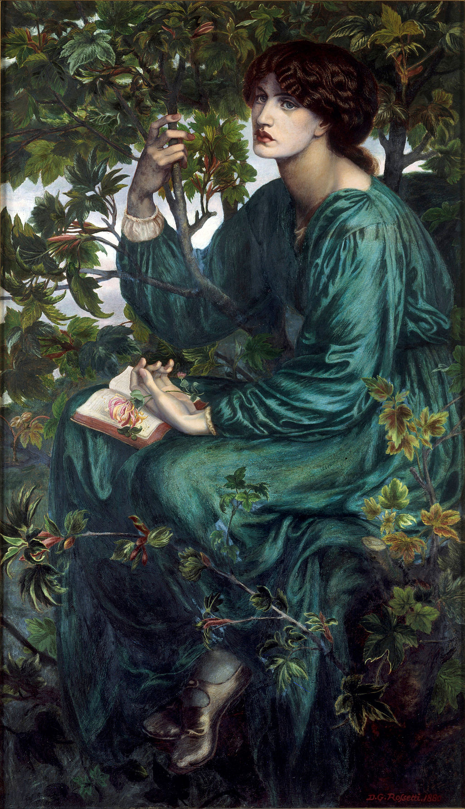

<head>
<meta charset="UTF-8" />
<meta name="keywords" content="drawing, painting" />
<meta name="description" content="drawings by Sunjy" />
<title>Sunjy</title>
<link rel="shortcut icon" type="image/x-icon" href="../../mImages/mCommon/favicon.ico" media="screen" />
<link rel="stylesheet" type="text/css" href="../../mCsses/mCommon/mCssA.css" />
<link rel="stylesheet" type="text/css" href="../../mCsses/mCommon/mCssB.css" />
<link rel="stylesheet" type="text/css" href="../../mCsses/mCommon/mCssC.css" />
<link rel="stylesheet" type="text/css" href="../../mCsses/mCommon/mCssD.css" />
<link rel="stylesheet" type="text/css" href="../../mCsses/mContent/mCssA.css" />
<link rel="stylesheet" type="text/css" href="../../mCsses/mContent/mCssB.css" />
<link rel="stylesheet" type="text/css" href="../../mCsses/mContent/mCssC.css" />
<link rel="stylesheet" type="text/css" href="../../mCsses/mContent/mCssD.css" />
</head>
<script type="text/javascript" src="../../mScripts/mContent/mContentAA.js" /></script>
<script type="text/javascript" src="../../mScripts/mContent/mContentAB.js" /></script>
<script type="text/javascript" src="../../mScripts/mContent/mContentAC.js" /></script>
<script type="text/javascript" src="../../mScripts/mContent/mContentAD.js" /></script>
<script type="text/javascript"></script> 
<script type="text/javascript">
document.write('<div class="mImgAbsolute"></div>');
/*
document.write('<p class="mFontSizeBColor" />From a white paper...</p>');
document.write('<table class="center"><tr><td>');
document.write('');
document.write('</td></tr></table>');
*/
</script>


<script type="text/javascript">
document.write('<p class="mFontSizeBColor" />The Day Dream</p>');
document.write('<p class="mFontSizeSColor" />“The Day Dream” by Dante Gabriel Rossetti was initially intended to be named Monna Primavera and depicts his lover and muse Jane Morris posed in a seated position on the bough of a sycamore tree.<br><br>She holds a small stem of honeysuckle in her hand, a token of love in the Victorian era. It symbolized the secret affair Rossetti was immersed in with Jane Morris at the time. She was the model for several of Rossetti’s well-known paintings.<br><br>This painting is one of Rossetti’s last and one of his few full-length depictions during this time of his career. The painting is signed “D. Rossetti 1880” on the lower right.<br><br>The scene is a representation of a woman in a green silk dress, shaded by the canopy of the sycamore tree’s leaves. All around her, the tree branches are depicted as if they want to embrace her.<br><br>Rossetti portrayed her clad all in green, her dress is a loose silk robe, flowing in folds and blending in with the tree’s leaves.<br><br>She is immersed in her daydreams, turning her gaze towards something unseen or perceived by her.<br><br>Rossetti made several revisions to the painting to meet his exacting expectations, including copying the feet of another woman to the picture.<br><br>The depiction of the woman in her shelter surrounded by the branches adds to the mystery of the painting, symbolizing the secrecy of their affair. <br><br>Rossetti completed a chalk sketch of Morris a few years earlier in 1878. Initially, the painting was to be called Monna Primavera, or Vanna Primavera, inspired by La Vita Nuova, a narrative that captivated Rossetti.<br><br>Rossetti penned sonnets to accompany several of his paintings. His last poem in his series entitled “Sonnets for Pictures” is associated with this painting. <br><br>Within the branching shade of Reverie<br>Dreams even may spring till autumn; yet none be<br>Like woman’s budding day-dream spirit-fann’d.<br>Lo! tow’rd deep skies, not deeper than her look,<br>She dreams; till now on her forgotten book<br>Drops the forgotten blossom from her hand.<br></p>');
document.write('<table class="center" /><tr><td>');
document.write('<br>She holds a small stem of honeysuckle in her hand, a token of love in the Victorian era. It symbolized the secret affair Rossetti was immersed in with Jane Morris at the time. She was the model for several of Rossetti’s well-known paintings.<br><br>This painting is one of Rossetti’s last and one of his few full-length depictions during this time of his career. The painting is signed “D. Rossetti 1880” on the lower right.<br><br>The scene is a representation of a woman in a green silk dress, shaded by the canopy of the sycamore tree’s leaves. All around her, the tree branches are depicted as if they want to embrace her.<br><br>Rossetti portrayed her clad all in green, her dress is a loose silk robe, flowing in folds and blending in with the tree’s leaves.<br><br>She is immersed in her daydreams, turning her gaze towards something unseen or perceived by her.<br><br>Rossetti made several revisions to the painting to meet his exacting expectations, including copying the feet of another woman to the picture.<br><br>The depiction of the woman in her shelter surrounded by the branches adds to the mystery of the painting, symbolizing the secrecy of their affair. <br><br>Rossetti completed a chalk sketch of Morris a few years earlier in 1878. Initially, the painting was to be called Monna Primavera, or Vanna Primavera, inspired by La Vita Nuova, a narrative that captivated Rossetti.<br><br>Rossetti penned sonnets to accompany several of his paintings. His last poem in his series entitled “Sonnets for Pictures” is associated with this painting. <br><br>Within the branching shade of Reverie<br>Dreams even may spring till autumn; yet none be<br>Like woman’s budding day-dream spirit-fann’d.<br>Lo! tow’rd deep skies, not deeper than her look,<br>She dreams; till now on her forgotten book<br>Drops the forgotten blossom from her hand.<br>" />');
document.write('</td></tr></table>');
</script>


